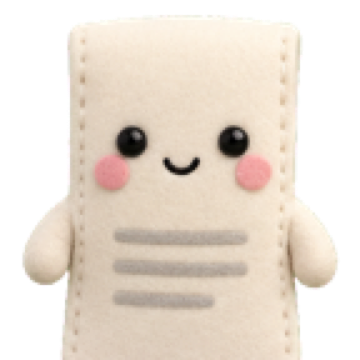
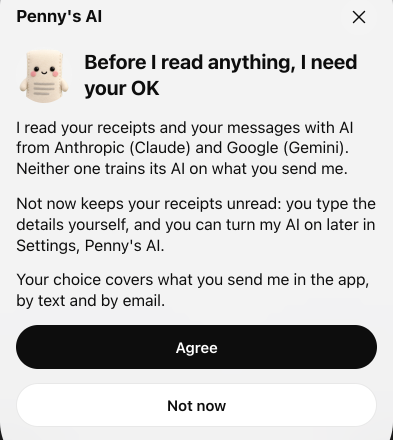

Receipt Hunter

Served by PennyPenny never asks for your bank login.
She never pays, moves money or signs.
- Bank loginnever
- Paysnever
- Moves moneynever
- Signsnever
Start free
Free while we launch. No card.
She sees each charge in the purchase alerts you forward. Any card that emails an alert works.
What she reads
Nothing, until you agree.

Her first question in the app
If you stop paying
Your records stay yours.
Every document and its history, viewing, search, export and your bookkeeper's login stay free, even if you stop paying.
Price
Due todayNothing
Start free
Free while we launch. No card.
Built in the Sacramento area with an HVAC contractor and an underground utilities crew.